Análisis exploratorio de datos con R
Curso Análisis de datos experimentales con R
Carlos Neftaly Lozano A.
www.microbiostats.com
Hablemos de R
Hablemos de R

Hablemos de R

Hablemos de R

Instalación de R
Empezaremos por lo más básico, Podemos instalar R desde el siguiente link: https://www.r-project.org/
| Sistema Operativo | Método |
|---|---|
| Windows | https://cran.r-project.org/bin/windows/base/old/3.4.2/R-3.4.2-win.exe |
| Debian y derivados | sudo apt-get install r-base |
| Redhat y derivados | sudo yum install R-core R-devel |
| Mac | https://www.youtube.com/watch?v=ICGkG7Gg6j0 |
Entornos de desarrollo para R
Una vez instalado, un entorno de desarrollo integrado será necesario para facilitar el desarrollo de códigos en R, por lo que se presentan tres de varias opciones para trabajar con R.
| IDE | Link |
|---|---|
| Tinn-R | https://sourceforge.net/projects/tinn-r/ |
| R-Studio [Recomendado] | https://www.rstudio.com/ |
| R commander (Rcmdr) | http://www.rcommander.com/ |

Rstudio

Flujo de trabajo sugerido en Rstudio

Flujo de trabajo sugerido en Rstudio

Flujo de trabajo sugerido en Rstudio

Flujo de trabajo sugerido en Rstudio

Flujo de trabajo sugerido en Rstudio

Empecemos.......

0. Estructura de datos

1. Importando datos a R
Tips: cosas que podrían producir problemas.
El separador decimal SIEMPRE SIEMPRE será un punto.
Nombres de columnas: no debe comenzar con números, tienen que ser sencillos y sin espacios ni caracteres especiales. Como sugerencia, los nombres de columnas deben ser cortos, ya que tendrás que escribirlos muchas veces.
R diferencia entre mayúscula y minúscula.
Rosa no es lo mismo que rosa.Si en una columna hay datos faltantes se debe dejar
espacio en blancoo remplazar conNA(con mayúsculas).
1. Importando datos a R
La forma más sencilla de importar un .csv es a través del comando read.csv(...), cuya implementación es la siguiente:
read.csv(file, header = TRUE, sep = ",", dec = ".", ...)
Dónde:
| Argumentos | Significado o uso |
|---|---|
file |
Ruta al archivo |
header |
Valor lógico para determinar si el archivo incluye encabezados en la primera linea. |
sep |
Este campo sirve para especificar el carácter de separación. |
dec |
El carácter usado para los puntos decimales |
... |
Ver la documentación para argumentos extras |
1. Importando datos a R
Un ejemplo sería el siguiente:
datos <- read.csv("dataframe1.csv",, header=T, sep=';', dec=',')
2. Manejando datos
¿Que son los dataframes o conjunto de datos?
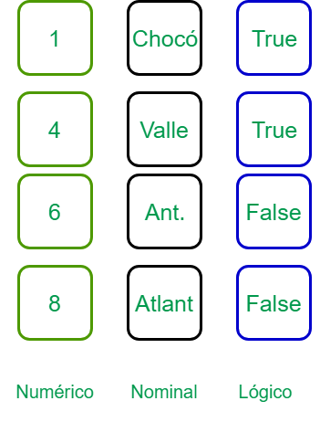
2. Manejando datos
Inspeccionado el contenido de un dataframe
Las funciones str(), head(), summary() pueden ser útiles para verificar el contenido y estructura de un dataframe.
head(mtcars)
## mpg cyl disp hp drat wt qsec vs am gear carb
## Mazda RX4 21.0 6 160 110 3.90 2.620 16.46 0 1 4 4
## Mazda RX4 Wag 21.0 6 160 110 3.90 2.875 17.02 0 1 4 4
## Datsun 710 22.8 4 108 93 3.85 2.320 18.61 1 1 4 1
## Hornet 4 Drive 21.4 6 258 110 3.08 3.215 19.44 1 0 3 1
## Hornet Sportabout 18.7 8 360 175 3.15 3.440 17.02 0 0 3 2
## Valiant 18.1 6 225 105 2.76 3.460 20.22 1 0 3 1
2. Manejando datos
Inspeccionado el contenido de un dataframe
str(mtcars)
## 'data.frame': 32 obs. of 11 variables:
## $ mpg : num 21 21 22.8 21.4 18.7 18.1 14.3 24.4 22.8 19.2 ...
## $ cyl : num 6 6 4 6 8 6 8 4 4 6 ...
## $ disp: num 160 160 108 258 360 ...
## $ hp : num 110 110 93 110 175 105 245 62 95 123 ...
## $ drat: num 3.9 3.9 3.85 3.08 3.15 2.76 3.21 3.69 3.92 3.92 ...
## $ wt : num 2.62 2.88 2.32 3.21 3.44 ...
## $ qsec: num 16.5 17 18.6 19.4 17 ...
## $ vs : num 0 0 1 1 0 1 0 1 1 1 ...
## $ am : num 1 1 1 0 0 0 0 0 0 0 ...
## $ gear: num 4 4 4 3 3 3 3 4 4 4 ...
## $ carb: num 4 4 1 1 2 1 4 2 2 4 ...
2. Manejando datos
Inspeccionado el contenido de un dataframe
summary(mtcars)
## mpg cyl disp hp
## Min. :10.40 Min. :4.000 Min. : 71.1 Min. : 52.0
## 1st Qu.:15.43 1st Qu.:4.000 1st Qu.:120.8 1st Qu.: 96.5
## Median :19.20 Median :6.000 Median :196.3 Median :123.0
## Mean :20.09 Mean :6.188 Mean :230.7 Mean :146.7
## 3rd Qu.:22.80 3rd Qu.:8.000 3rd Qu.:326.0 3rd Qu.:180.0
## Max. :33.90 Max. :8.000 Max. :472.0 Max. :335.0
## drat wt qsec vs
## Min. :2.760 Min. :1.513 Min. :14.50 Min. :0.0000
## 1st Qu.:3.080 1st Qu.:2.581 1st Qu.:16.89 1st Qu.:0.0000
## Median :3.695 Median :3.325 Median :17.71 Median :0.0000
## Mean :3.597 Mean :3.217 Mean :17.85 Mean :0.4375
## 3rd Qu.:3.920 3rd Qu.:3.610 3rd Qu.:18.90 3rd Qu.:1.0000
## Max. :4.930 Max. :5.424 Max. :22.90 Max. :1.0000
## am gear carb
## Min. :0.0000 Min. :3.000 Min. :1.000
## 1st Qu.:0.0000 1st Qu.:3.000 1st Qu.:2.000
## Median :0.0000 Median :4.000 Median :2.000
## Mean :0.4062 Mean :3.688 Mean :2.812
## 3rd Qu.:1.0000 3rd Qu.:4.000 3rd Qu.:4.000
## Max. :1.0000 Max. :5.000 Max. :8.000
3. Funciones más comunes
| Función | Matemáticas | Función | Estadísticas |
|---|---|---|---|
| sqrt(x) | Raíz de \(x\) | mean(x) | Media |
| exp(x) | Exponencial de \(x\) | sd(x) | Desviación estándar |
| log(x) | Logaritmo natural de \(x\) | var(x) | Varianza |
| log10(x) | Logaritmo base 10 | median(x) | Mediana |
| sum(x) | Suma de los elementos de \(x\) | quantiles(x) | Quantiles |
| prod(x) | Producto de los elementos de \(x\) | cor(x,y) | Correlación |
| sin(x) | Seno | max(x) | Valor máximo |
| cos(x) | Coseno | min(x) | Valor mínimo |
| tan(x) | Tangente | range(x) | Retorna el máximo y mínimo |
| round(x,n) | Redondea a \(n\) dígitos | sort(x) | Ordena los elementos de \(x\) |
| cumsum(x) | Calcula las sumas acumuladas | summary | Resumen de las variables |
| (\(x_1, x_1 + x_2, + x_1 +\ldots+x_n\)) | choose(n,k) | Combinatoria de \(n\) sobre \(k\) |
Pidiendo ayuda en R
La documentación de ayuda y soporte en R es completa y de fácil acceso desde la línea de comando.
Ayuda general
help.start() # Ofrece links de ayuda general
help.search("texto") # Busca un tema específico
?mean # Para funciones conocidas
??correlation # Búsuqedas más amplias
Estadística descriptiva y análisis exploratorio con R
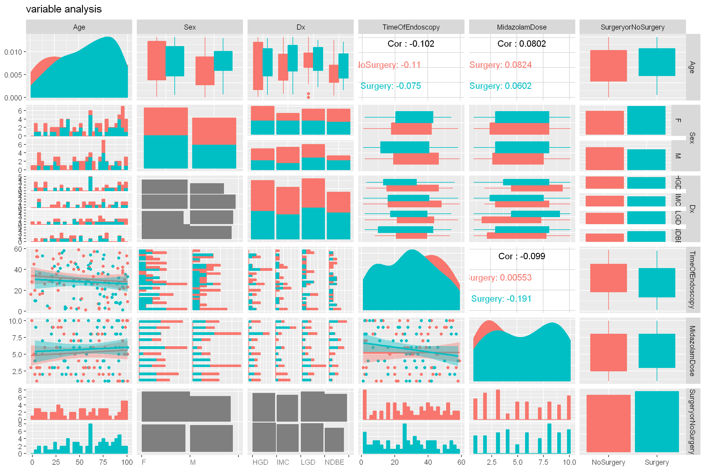
Datos
En estadística, 'los datos' se conceptualizan como un conjunto de objetos sobre los cuales medimos u observamos una o más características .

Variable
Una característica o atributo que puede variar de un individuo a otro.
Variable
- Inviduo
- Observación
- sujeto
- objeto
- caso
- Unidad experimental
- Variables
- Característica
- Atributo
- Rasgo
Variables
Las variables juegan un papel protagónico en la estadística y diseño de experimentos
Variables

Variables

Caso 1: Unas cuantas manzanas....
Caso 1: Unas cuantas manzanas....

Caso 2: Más manzanas....
Caso 2: Más manzanas....

Caso 3: Muchas más manzanas....

Caso 3: Muchas más manzanas.....

Resumiendo variables...
Tablas de frecuencia
Gráficos
Resumenes numéricos
Resumiendo variables: Tablas de frecuencia
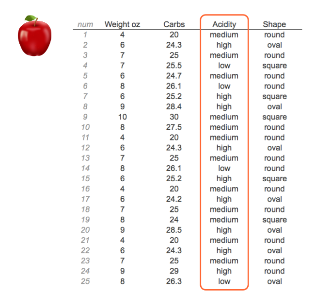
Resumiendo variables: Tablas de frecuencia
| Acidity | Conteo |
|---|---|
| Low | 23 |
| Medium | 12 |
| High | 35 |
Resumiendo variables numéricas

Medidas de tendencia central
Media: Promedio
Mediana: Punto medio o central
Moda: Más común o frecuente
Media
\[\bar x = \frac{1}{n}\sum_{i = 1}^{n} x_i\]

Mediana
Es el punto medio o central de una distribución ordenada de valores.
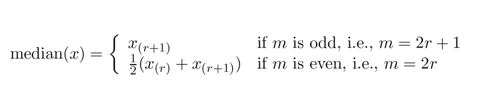
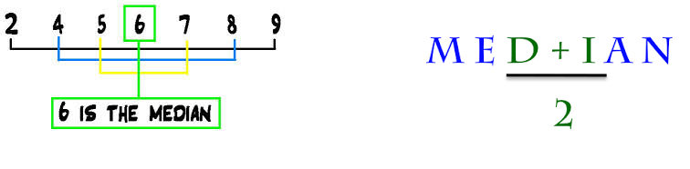
Medidas de dispersión
- Desviación estándar
- Varianza
- Rango
Variables categóricas: Representación gráfica
Gráfico de tortas
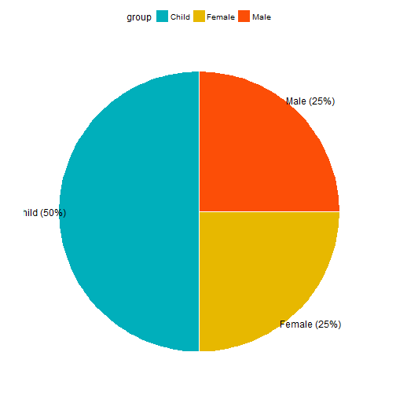
Variables categóricas: Representación gráfica
Gráfico de barras
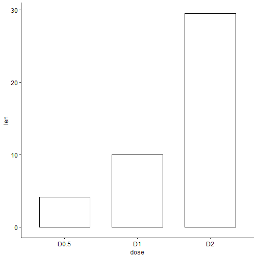
Exploración gráfica
Exploración: Comprobar si en los datos hay valores inusuales, asegurarse de cumplir los suspuestos requeridos por el anáisis seleccionados y, en ocasiones, ayudarnos a decidir que tipo de análisis llevar a cabo.
Análisis: Evaluación de hipótesis
Presentación y comunicación de resultados
Histogramas
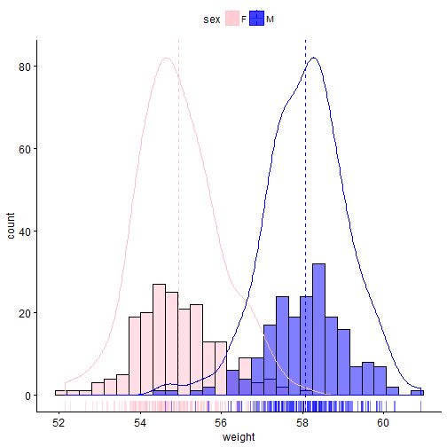
Dot plots o gráficos de puntos
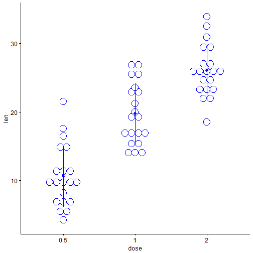
Boxplot o Cajas y bigotes

Boxplot o Cajas y bigotes
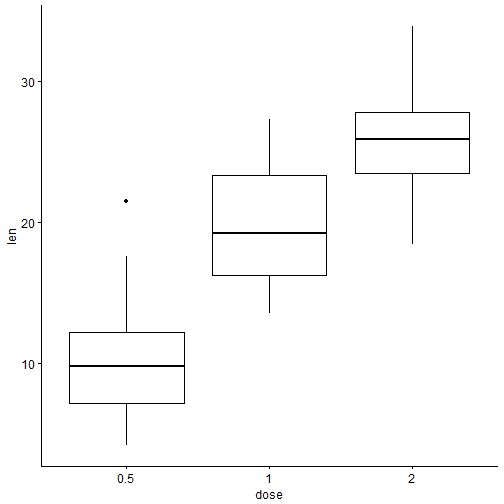
Boxplot o Cajas y bigotes
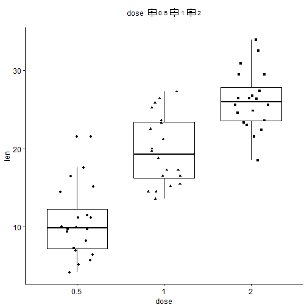
Scatterplot o Gráfico de dispersión
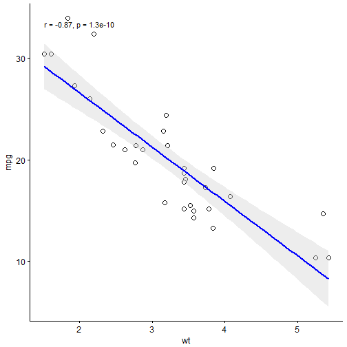